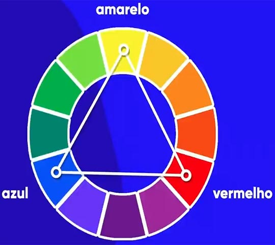
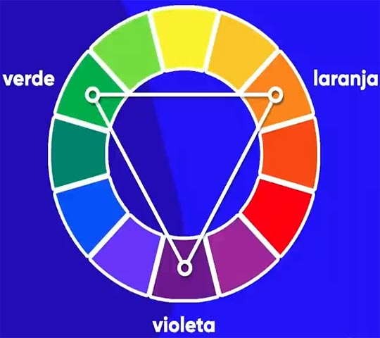
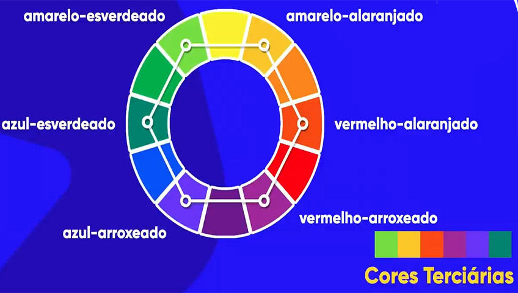
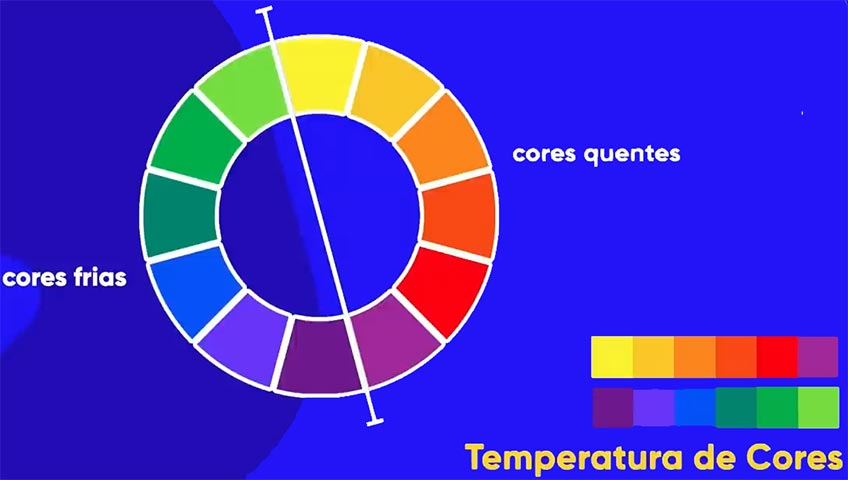
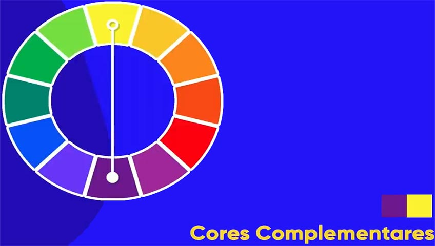
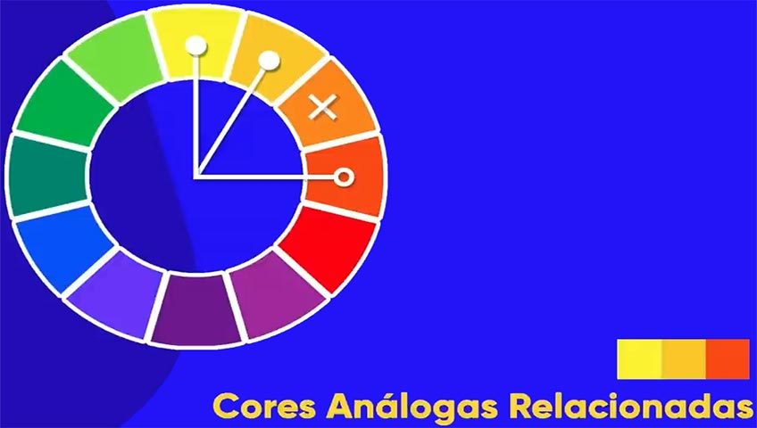
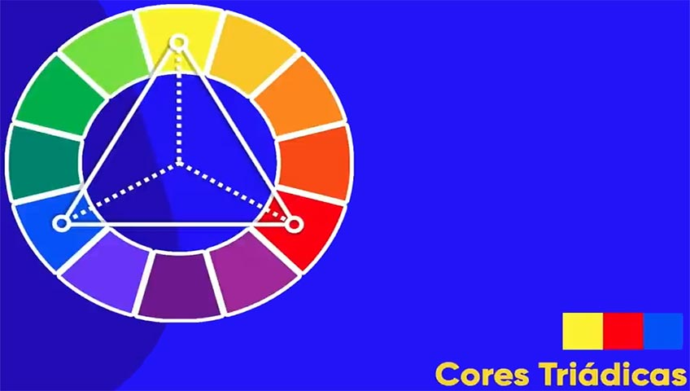
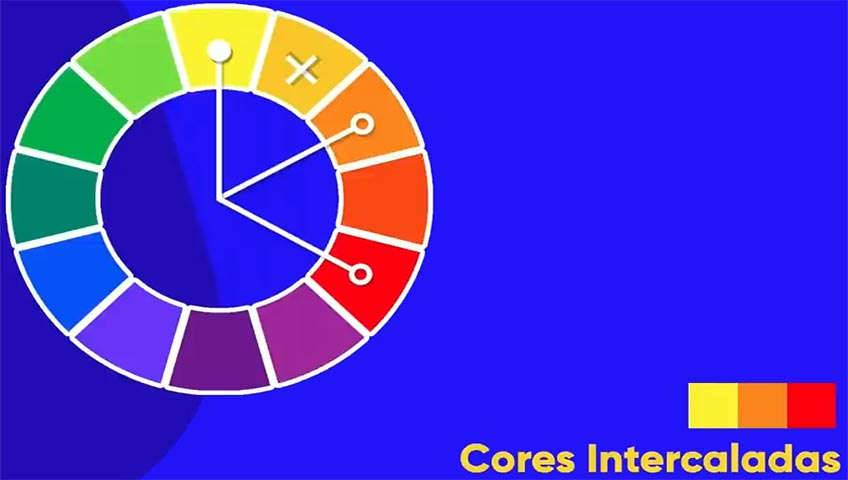
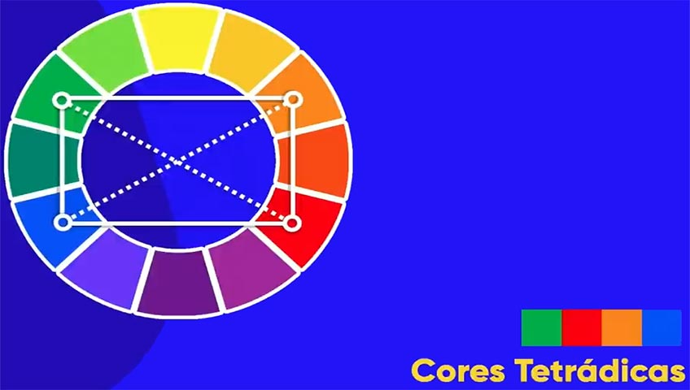

As cores tem uma grande importância na nossa vida, pois influênciam o nosso humor, conforto visual,
criatividade, emoção e bem estar.
As cores podem determinar a quantidade de tempo que um visitante vai ficar no nosso site e é um poderoso
critério de decisão.
Psicologia das cores
O ciclo cromático
O ciclo cromático é uma representação visual de todas as cores existente. Toda a cor representada nele possui
uma matiz, saturação e brilho; A matiz é a representação
básica de determinada cor, saturação é a intensidade da cor e o brilho é a tonalidade dela.
O objectivo do ciclo cromático é harmonizar as cores.
Classifição das cores
O ciclo cromático básico possui 12 cores que são classificadas em primárias, secundárias e tercearias.
Cores primárias
São as cores básicas do ciclo, e são formadas pelo o amarelo, vermelho e azul; elas formam um triângulo
equilatero entre si.

Cores secundárias
São geradas pela junção das cores primárias; elas são o laranja,verde e violeta.

Cores tercearias
Surgem da junção das cores primárias com as secundárias; toda cor tercearia está entre uma cor primária e uma
secundária. A sua nomeação é feita pela junção do nome da cor primária com a secundária; essas cores
são o amarelo-alaranjado, vermelho-alaranjado, vermelho-arroxeado, azul-arroxeado, azul-esverdeado,
amarelo-esverdeado.

Temperatura de cores
O ciclo cromatico divide as cores pela temperatura em dois grupos que são frias e quentes, as cores frias são
ideias para representar contextos
de frio como o inverno, o natal, etc; enquanto que as cores quentes são mais usadas para representar contextos
mais quentes como o verão, a praia, etc.

Harmônia de cores
Cores harmônicas são aquelas que combinam entre si, gerando um conforto visual.
Classifição da harmônia
Cores complementares
São aquelas que estão opostas entre si no ciclo cromático, e apresentam maior contranste; são usadas para chamar
a
atenção.

Cores análogas
São aquelas que apresentam muita semelhança entre si, dando a sensação de que são a continuidade uma da outra;
elas são vizinhas no ciclo.
Cores análogas e uma complementar
Nessa tecnica escolhe-se uma cor principal e seleciona-se a sua complementar e a sua análoga; essa combinação
cria um
constraste grande.
Cores análogas relacionadas
Nessa tecnica esolhe-se uma das cores vizinhas e depois salta-se uma cor para selecionar a seguinte; essa
combinação cria um
contraste menor.

Cores intercaladas
Para criar esse tipo de combinação, escolhe-se a cor principal e salta-se uma, duas ou mais cores para escolher
a
outra; os principais tipos de cores intercaladas são as triadicas, quadraticas e tetrádicas;
Cores triadicas
Escolhe-se a cor principal e salta-se de 3 em 3 cores para escolher a outra.

Cores quadraticas
Escolhe-se a cor principal e salta-se de 2 em 2 cores para escolher a outra.

Cores tetrádicas
Escolhe-se a cor principal e a sua complemtar, depois escolhe-se outra cor e a sua complementar, as cores
escolhidas devem
formar uma rectângulo entre si.

Cores monocromáticas
Escolhe-se a cor principal e altera-se a sua saturação e luminosidade para gerar outras cores.
Paleta de cores
É um conjunto de cores pré-selecionadas utilizadas de forma harmônica; ela vai ter de 3 a 5 cores,sem contar com
o preto e o branco.
1. Passos para a criação
Contexto
As cores escolhidas devem transmitir a mensagem certa para isso deve-se fazer as seguintes perguntas:
Qual é a mensagem que quero passar?
Que cor passa melhor essa mensagem?
A cor principal pode ser escolhida através do conteúdo a ser criado ou da logo marca do cliente; ao
selecionar a
primeira opção deve se escolher o tom da cor que melhor combine com o conteúdo do site, pois esse deve
ser lido com fundo branco e letra preta.
Combinação
Neste passo deve-se escolher cores que combinem com a cor principal. Depois de ter todas as cores,
selecione uma para ser a cor dominante(principal), outra para ser a
secundária
e outra para ser de assento; a cor secundária e de assento devem constratar com a
dominante.
Contribuição
Cada cor escolhida deve desempenhar uma função no site, para garantir isso usamos a regra do design
60-30-10
que diz que uma cor deve ser utilizada para fundo(60%), outra para titulos,textos e elementos(30%) e a
ultima para botões e chamadas de acção(10%).
Para capturar determinada cor que aparece na nossa tela podemos utilizar duas tecnicas, a primeira é fazer um
print da tela e passar a imagem para o photoshop e a segunda e a melhor é utilizar a extensão do google chrome,
o Colorzila
Gradiente
É a área onde duas ou mais cores são sobrepostas. Para aplicar gradientes usa-se a tag
background-image:linear-gradient(direcção, cores área(percentagem))